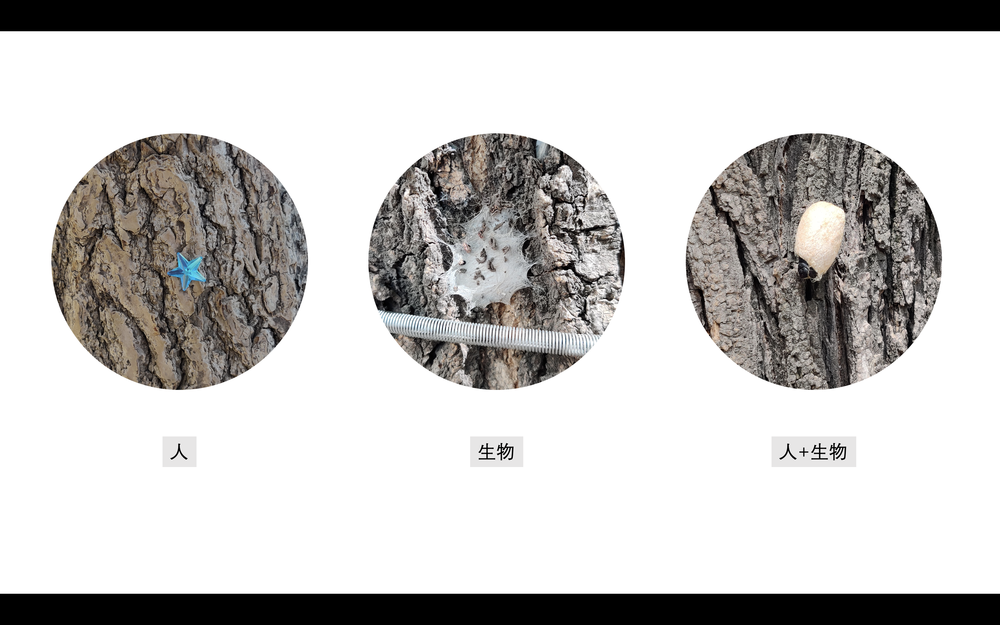
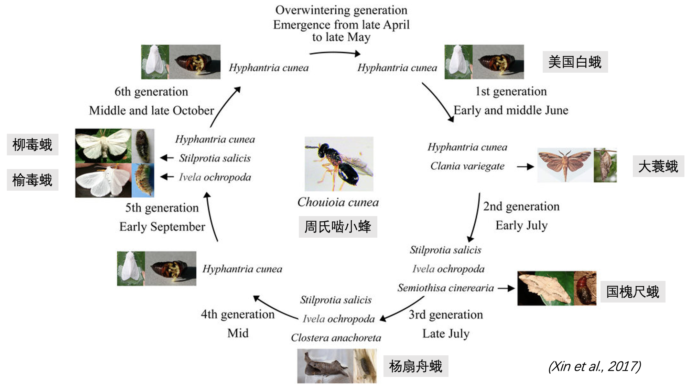
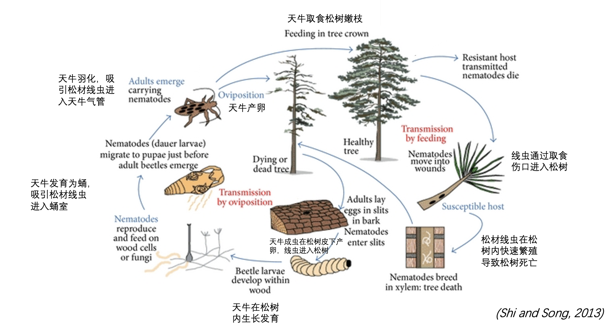
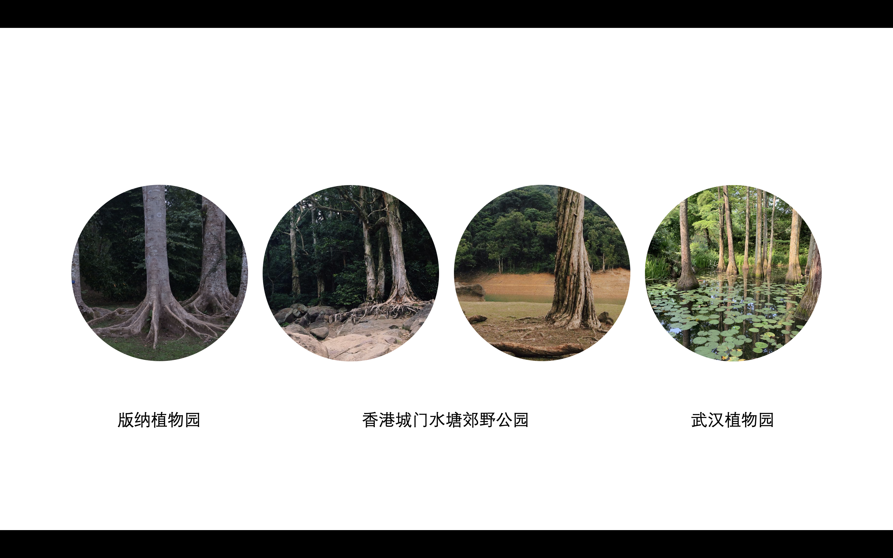
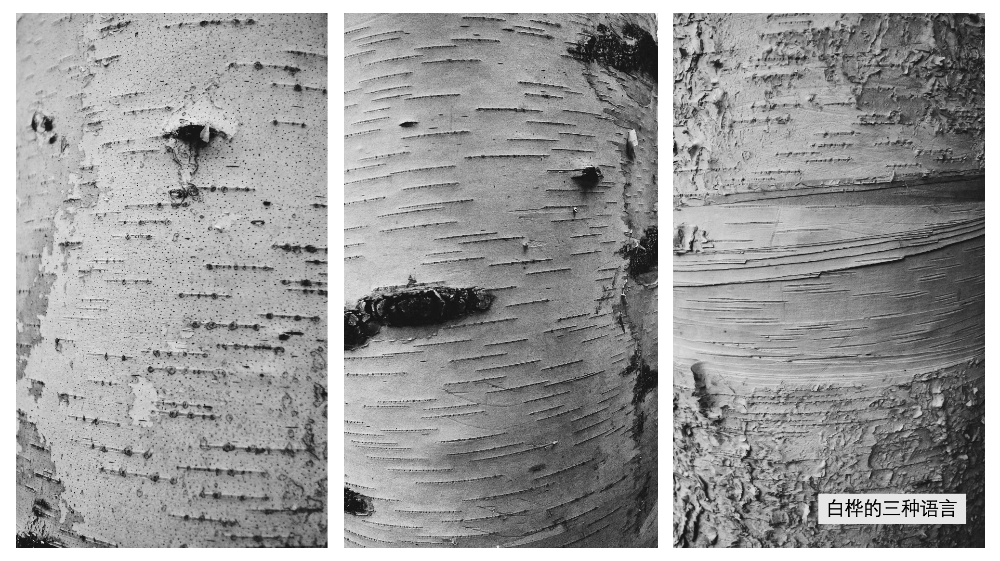

Jul 24, 2023
它们如何一起工作——公园里的生态学
公园爱好者大会上的聊天记录
我小的时候在城市里总是有点神经紧张的，不知道该做什么。城市生活好像这张复杂的网络一样，所有小圆点都有自己的位置，但是我找不到我是哪个小圆点。不知道做什么的时候我就去公园散步，我发现至少在走路这方面我做的挺好。不光是走路，我还发现公园像是我的回血点，坐着看看公园里的树和草，好像没几个认识的，当时就想去认识认识它们。所以我就决定学习林学和生态学，也看看城市之外的生活是什么样的。
公园侦探
我觉得我的工作方式有点像一个侦探，都是负责解释一些问题，调查一些案件，或者叫谜题。工作的时候是森林侦探，去公园的时候就变成公园侦探。
在野外通过长期的观察和分析，我学到了各种生物是怎么在森林里共存的。但是在公园里，除了树之外，我不知道还有谁在公园里生活，它们为什么在这里，它们互相之间有什么关系，是不是也和森林一样，有很多需要搞清楚的事情。所以没事的时候我就变成一个公园侦探。
谜题：自然的运作方式
我发现，由于公园是人造的，所以一时难以理解的事情并不比森林里少。
树皮上的故事

我首先注意到的是树皮。从植物分类学的角度，不同的树种它们有独特的树皮外衣，但我发现树皮上还有别的神奇的东西：比如一些人类的创作，一些公园艺术家们会在树上用雪捏一只猫，或者是根据树干的形态捏一些复杂的动作。

又比如也会有一些小破坏，把这种塑料片粘在或者钉在树干上。也会看到其他生物的艺术创作。以及一些有点违反物理常识的即像人类又像自然的小创作。这个倒挂在树上的蛹在每年4，5月份的时候会出现在很多阔叶树上。
拍下来之后我去查资料，发现这个东西能阻止一种害虫，叫美国白蛾。
科学事实

美国白蛾是起源于北美大陆的一种蛾类。它们喜欢吃几乎所有种类的落叶树的叶子，对温带国家的阔叶树都会造成了很大的危害。这个蛹是柞蚕的蛹，科学家第一次在野外采集并命名了美国白蛾的自然天敌之一——周氏啮小蜂后，发明了用柞蚕的蛹来人工繁殖周氏啮小蜂，进而防治美国白蛾。
这种蜂一年可以有4-7代。每年的4，5月份左右，雌虫会迅速找到寄主美国白蛾的茧。为了产卵，它们会先咬破寄主的茧，然后把卵产在寄主的蛹内。随着蜂的长大，它们耗尽了寄主蛹里的养分，羽化为成虫飞出寄主的茧，继续去找新的寄主。
选择用周氏啮小蜂来防治美国白蛾有一个很重要的优势，就是它们后代的雌雄性别比最高可以达到96：1。由于美国白蛾在中国一年最多也就繁殖3代左右，所以蜂的种群数量很快就能超过寄主蛾的数量，所以能非常有效地控制住美国白蛾。
除了美国白蛾以外，周氏啮小蜂还可以寄生在其他虫上，它们不仅可以继续消灭会危害其他林木或者果树的蛾类，还可以通过这种方式维持自己在种群数量上的优势，时刻保持着充足的战斗力，当爆发第二代第三代美国白蛾的时候继续消灭它们。
聪明的敌人
目前美国白蛾主要还是喜欢吃阔叶树的叶子，暂时不怎么攻击针叶树。
但实际上针叶树有一个更厉害的敌人，就是松材线虫。
松材线虫很聪明的，它们会通过媒介昆虫松墨天牛来危害针叶树。

每年2月份前后，线虫幼虫聚集在天牛幼虫的蛹室周围，在天牛幼虫向成虫演变中，进入天牛的气管，这样在天牛最终羽化为成虫时就自然携带了大量的线虫。因为线虫的体型非常小，所以一只天牛最多可以携带28万条松材线虫。
当天牛啃针叶树的树皮补充营养时，线虫就从树皮的伤口处进入松树体内快速繁殖，最终导致松树死亡。
坏消息里的好消息是目前松材线虫在自然森林中比较多。城市公园对这种害虫主要还是以监测为主。
了解了这些事情之后，我就觉得城市生活还是很热闹的，还是有很多生物和人们在我想不到的地方生活和工作。
地下的故事
这些看的见的谜题其实还有很多，但因为我的研究方向主要关注地下的生态过程，所以我对一些看不见的谜题更感兴趣。

比如我在逛公园的时候，发现不同地方公园里的树，它们的树根形态非常不一样。
在南方的公园，很容易就能观察到树根伸展的样子。

但是在北方可能不太常看到暴露的树根，大部分情况就是像电线杆一样立在土里。不过也有些公园，它显然非常重视树根的形态，也会进行一些创作。
还有的时候尽管你也看不到地下的树根，但它们还是会非常有存在感地把地面搞得起起落落。

这些发达的树根说明树木在很努力地吸收土壤中的养分，以维持地上部分的生长。对于针叶树来说，它们的竞争力有时候会弱于阔叶树，尤其是在养分不足的情况下，比如没有人为添加肥料的城市地块内，它们可能得不到足够的养分供它们生活。但是它们有非常好的真菌伙伴，一类被称为外生菌根真菌，这些真菌在地上能长出很大的伞盖的形态，在地下呢，就生长在树根最尖端的很细的根上，形成菌丝和菌根。它们自己不能光合作用，不能合成碳，但是可以吸收土壤里的其他养分，而针叶树呢它可以吸收养分，但是在漫长的演化过程中，松树选择把这部分工作外包给这些真菌去完成，它们用自己的碳和真菌做养分交易，来得到更多的氮和磷，这种合作的关系已经维持了至少2亿年。几乎所有针叶树都和ECM真菌有合作的共生关系。
于是我就想到，既然这些真菌能帮针叶树获得养分，那它们能帮针叶树抵御松材线虫的大流行吗？
我就去查了查资料，发现有一篇论文确实做过这方面研究，他们就发现，同样是受到松材线虫危害的松树幼苗，那些受到过真菌帮助的松树确实有更高的抵抗力。
但科学研究的结论往往有严格的假说限定，因此关于真菌能不能帮助成年后的松树，尤其是公园里的白皮松，油松这样的老树防御松材线虫，还是一个未解的谜题。
更多的谜题
除了上面的谜题，我还有很多小谜题，比如：

这个被砍伐过的树桩里藏着一些瓜子皮儿和悬铃木的球，不知道是无聊的人类还是有储藏习性的小动物藏的。
还有这个装置，应该是一个小鸟食堂，根据这三个窗口和下降的食物线，我猜这应该是一个广受好评的餐厅，我也想亲眼看看几只小鸟一起就餐是什么样的场景。
还有这个花瓣落在水面，在流动的过程中不是单个漂浮，也不是聚成一大团，而是三五成群一样，会聚集成不同的形状，这里面可能涉及到一些自组织的过程。
这个树干已经快被虫蛀出一张人脸了，但是别的部分还没死，看起来有点像小蠹虫蛀的。小蠹虫这种总是有一些创意的蛀洞行为，也是一个挺有意思的现象。

- 树皮上还有各种各样的语言，比如在一片林里就有至少三种语言，这显然也是个未解之谜。

- 这个左边是我在清华东路带状公园休息的时候拍的树冠，右边是森林里拍的树冠，看起来似乎自然状态下的树更社恐一些，更不想碰到其他的树。这似乎是一个更大的谜题。
我们和它们
通过这些观察，我发现很多谜题背后的原理可能都是相似的，不管是森林，还是公园，还是我们的生活里。这些谜题需要更多公园侦探大胆发现，小心求证，然后讲给别人看看是不是这么一回事。
随着年龄的增长，我意识到小时候的我之所以在城市里不知道该干嘛，可能是因为当时的我觉得城市生活有点孤独。现在我觉得我和这些树，昆虫还有真菌没什么区别，都是这个城市的市民之一，都有自己的生活和工作。也许有一天我们的生活还会交织在一起，产生一些新的谜题，那这个地方我想一定是在公园里。